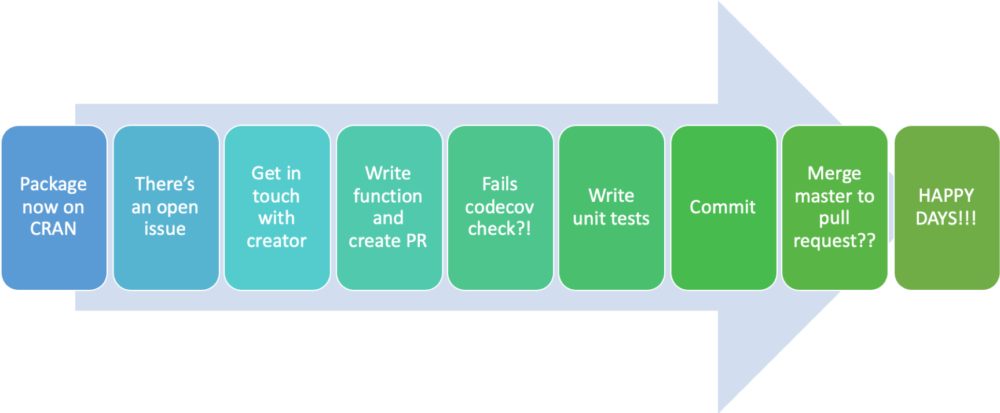

For the last year or so, I’ve had this desire to contribute to an open source R package, but like a lot of people, I found the thought of tackling the task frightening.
While I work in a really dynamic and close team every day, and in the world of remote repositories (Git), I’ve had really limited exposure to collaborative working in these remote repositories… We tend more to work on projects largely on our own, so the concepts of pull requests (PRs), merging, forking… well it was all a bit daunting.
The following is a glimpse at the journey, and will be explained in this post:

What this post won’t be is an exhaustive step-by-step guide of every touch point, rather a medium-high level summary.
Life is not meant to be easy, my child; but take courage: it can be delightful. - George Bernard Shaw
With George’s words in mind, I thought time to push myself to jump in.
Scrolling through Twitter (as one does when nursing a newborn), I came across a tweet about a package I’ve used in a few analyses on Don’t Blame the Data that said that the package was now live on CRAN (a great achievement).
This naturally led me to the repository on github, at which point I noticed there were open “Issues”, and one of these being for a function to create a ladder for any round.
The fitzRoy Package
The fitzRoy package, created by James Day, is a package designed to help R users extract and analyse Australian Football League (AFL) data for both the men’s and women’s competitions:
The goal of fitzRoy is to provide a set of functions that allows for users to easily get access to AFL data from sources such as afltables.com and footywire.com. There are also tools for processing and cleaning that data.
While I certainly haven’t done any extensive analysis on this point, I would guess that a large proportion of all AFL data analytics projects are completed with the help of this package.
Jumping right in
So rather than think about how good it would be to contribute, why not just get in touch with James and offer to address the open issue…
James was super easy to deal with, and boy was he helpful (and patient with this bumbling fool).
Then came the time to write the function. Well sort of write the function. Fortunately, I had already written this function for a linear regression model I built for predicting the attendance of AFL home and away games here. The function was aptly named return_ladder()… I’m a Data Scientist, not a poet.
The function was modified somewhat though to take advantage of the get_match_results() function in the package to return the starting data frame for return_ladder When writing the function, I wanted to address the requirement that the ladder be returned for any round, and for it to be returned for even earlier than the 2011 season, which another API already offered.
With that in mind, the function written takes in three arguments, all of which have the option of being blank, as well as specified:
match_results_df - A data frame extracted using get_match_results(),season_round - The round of the season the user wants the ladder for,season - The season the ladder is required for.
If these are all left blank, the function will return the ladder for every round of every season since the 1897 season.
Having the function written was one thing, it also required roxygen notes, that are returned to the user in the help docs of the function. Hadley’s R Packages book does a good job explaining these.
I’m ready to be a contributor
I’ve written the function, the help docs, and have checked the package using devtools::check() to make sure I haven’t made any mistakes that would cause the package to fail it’s build… Nothing looks alarming (well there are some warnings about No visible binding for global variable or something but I’m sure there’s nothing to worry about), but all looked good to me.
My local changes were committed and a PR was made, I’m ready to be a contributor, and then bam! Failed codecov!! What is that?! An email to James and I’m told it’s because there were no tests written. Ok cool, I’ll write some tests… WHAT ARE TESTS?! HOW DO I WRITE THESE TESTS?! I found this post to be really helpful, as well as Hadley’s tests in the R Packages book.
Once these tests were written, I commit my changes, I’m ready to be a contributor, and then bam! Changes have been made to the master that I haven’t got in my PR… ok so I need to merge the master in my PR - easy (for some maybe, I have no idea). A bit of googling, seems pretty easy, but after typing git merge origin/master, I get this editor pop up in terminal:
My initial thoughts? What the is this?!
Bit of googling, ok, it’s a VIM editor. Easy. Write a commit message and then all should be good… WAIT?! How do I get out of this screen?! Bit more googling and after typing :WQ, we’re ready to rock.
What. Am. I. Doing?!!
Ok so things were looking good. I’d committed my changes, all checks passed, happy days.
You know that line I had earlier about well there are some warnings about ‘No visible binding for global variable’ or something but I’m sure there’s nothing to worry about?? Well that was nagging away at me, because as James had advised, these would cause issues when trying to include the update on CRAN. So I fixed those, and also updated the Men’s vignette. It’s at this point that I’m a bit hazy on what I did, but all I know is is that I must have spun myself into a Git web…
The Master of my forked repo was two commits behind my branch Ladder, which was five commit’s ahead of Origin/Master. What. Am. I. Doing?! Trial and error, error and trial. After much heartache (I can’t stress enough how much heartache), eventually, I got myself all sorted, created another PR and… SUCCESS!!!
Finally I can say I have successfully made my first contribution to an open source project. I hope that users of this package find the function useful and as with everything, can find improvements to make it even better.
A quick look at the function
The below code gives a glimpse into how the function can be used.
#----- Install and Load Package -----#
# devtools::install_github("jimmyday12/fitzRoy")
library(fitzRoy)
library(tidyverse)
# get a data frame of AFL data using get_match_results
afl_data <- get_match_results()
** Return the ladder for all teams, for all rounds since 1897**
# apply the return_ladder function
ladder <- return_ladder(match_results_df = afl_data)
head(ladder, 16)
## # A tibble: 16 x 8
## Season Team Round.Number Season.Points Score.For Score.Against
## <dbl> <chr> <int> <dbl> <dbl> <dbl>
## 1 1897 Fitz… 1 4 49 16
## 2 1897 Coll… 1 4 41 16
## 3 1897 Esse… 1 4 47 24
## 4 1897 Melb… 1 4 44 27
## 5 1897 Sydn… 1 0 27 44
## 6 1897 Geel… 1 0 24 47
## 7 1897 St K… 1 0 16 41
## 8 1897 Carl… 1 0 16 49
## 9 1897 Fitz… 2 8 115 42
## 10 1897 Melb… 2 8 108 46
## 11 1897 Coll… 2 8 91 46
## 12 1897 Esse… 2 4 77 74
## 13 1897 Sydn… 2 4 67 80
## 14 1897 Carl… 2 0 52 89
## 15 1897 St K… 2 0 42 107
## 16 1897 Geel… 2 0 43 111
## # … with 2 more variables: Percentage <dbl>, Ladder.Position <int>
Return the ladder for round 1 for all teams since 1897
# what if we want the ladder for a specific round?
ladder_round_1 <- return_ladder(match_results_df = afl_data, season_round = 1)
tail(ladder_round_1, 18)
## # A tibble: 18 x 8
## Season Team Round.Number Season.Points Score.For Score.Against
## <dbl> <chr> <int> <dbl> <dbl> <dbl>
## 1 2019 GWS 1 4 112 40
## 2 2019 Frem… 1 4 141 59
## 3 2019 Bris… 1 4 102 58
## 4 2019 Hawt… 1 4 87 55
## 5 2019 Rich… 1 4 97 64
## 6 2019 Port… 1 4 87 61
## 7 2019 Foot… 1 4 82 65
## 8 2019 Geel… 1 4 72 65
## 9 2019 St K… 1 4 85 84
## 10 2019 Gold… 1 0 84 85
## 11 2019 Coll… 1 0 65 72
## 12 2019 Sydn… 1 0 65 82
## 13 2019 Melb… 1 0 61 87
## 14 2019 Carl… 1 0 64 97
## 15 2019 Adel… 1 0 55 87
## 16 2019 West… 1 0 58 102
## 17 2019 Nort… 1 0 59 141
## 18 2019 Esse… 1 0 40 112
## # … with 2 more variables: Percentage <dbl>, Ladder.Position <int>
Return the ladder for every round of the 2018 season
# finally, for every round in just one season
ladder_2018 <- return_ladder(match_results_df = afl_data, season = 2018)
head(ladder_2018, 18)
## # A tibble: 18 x 8
## Season Team Round.Number Season.Points Score.For Score.Against
## <dbl> <chr> <int> <dbl> <dbl> <dbl>
## 1 2018 GWS 1 4 133 51
## 2 2018 Port… 1 4 110 60
## 3 2018 Hawt… 1 4 101 67
## 4 2018 Gold… 1 4 55 39
## 5 2018 Sydn… 1 4 115 86
## 6 2018 St K… 1 4 107 82
## 7 2018 Rich… 1 4 121 95
## 8 2018 Esse… 1 4 99 87
## 9 2018 Geel… 1 4 97 94
## 10 2018 Melb… 1 0 94 97
## 11 2018 Adel… 1 0 87 99
## 12 2018 Carl… 1 0 95 121
## 13 2018 Bris… 1 0 82 107
## 14 2018 West… 1 0 86 115
## 15 2018 Nort… 1 0 39 55
## 16 2018 Coll… 1 0 67 101
## 17 2018 Frem… 1 0 60 110
## 18 2018 Foot… 1 0 51 133
## # … with 2 more variables: Percentage <dbl>, Ladder.Position <int>
I will be writing a follow up post analysing the AFL ladder through history to really test the function out!
Stay tuned.